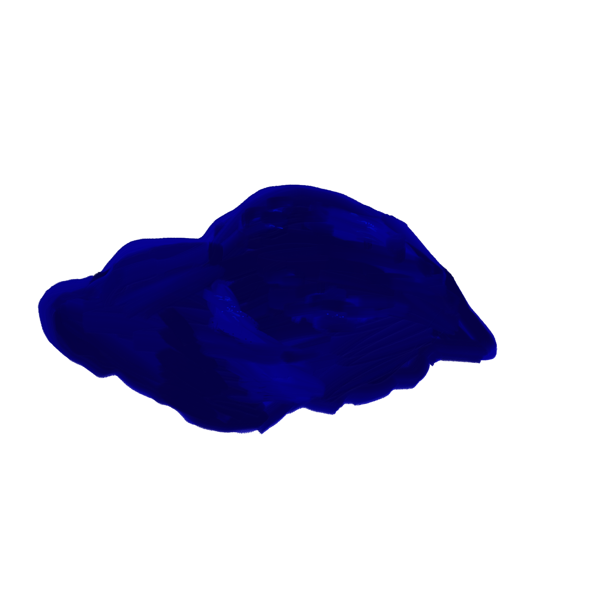

Blueee velvet... she wore blueee velvet. Ha. I'd say this was the most lynchian object of the lot. A scrap of velvet by the curb, right next to the tire of a car that did not move in the two days I observed this velvet scrap. My favorite quality of velvet is its ability to glow almost from the inside out. Especially in this gorgeous jewel blue. I can't begin to fathom how this ended up on the ground. It seems as absurd as the ear Jeffrey found in the movie.
